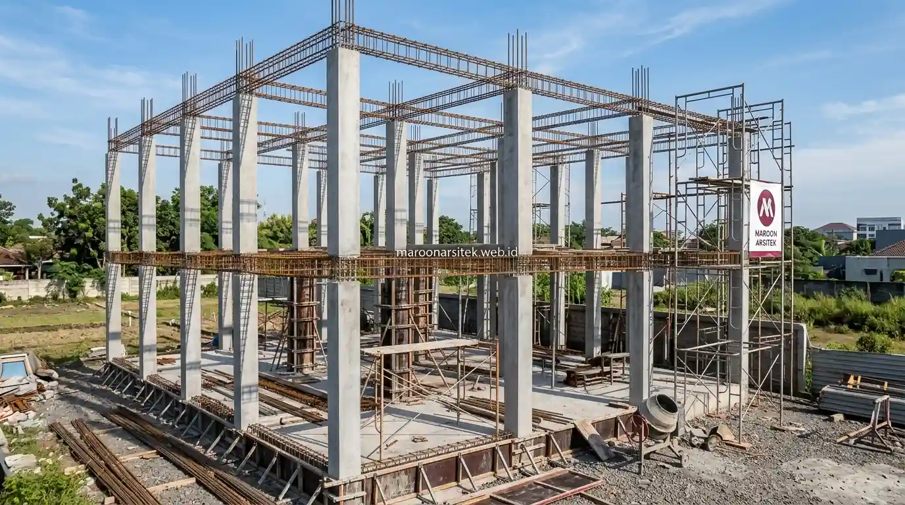

Penghematan anggaran yang dilakukan secara sembarangan justru berisiko mengorbankan kualitas struktur, padahal terdapat banyak strategi efisiensi yang dapat diterapkan tanpa menyentuh komponen yang berkaitan langsung dengan keamanan bangunan. Bersama layanan jasa kontraktor rumah profesional Maroon Arsitek, impian memiliki hunian estetik dan kokoh dapat tercapai sesuai budget yang Anda miliki.
Efisiensi pada Tahap Perencanaan Desain Rumah
Efisiensi yang dilakukan sejak tahap desain memberikan dampak penghematan paling besar, karena keputusan desain memengaruhi kebutuhan material dan kompleksitas pengerjaan pada tahap konstruksi selanjutnya. Berikut cara efisiensi yang dapat diterapkan pada tahap ini:
- Denah Geometris Simetris: Merancang denah dengan bentuk yang efisien, seperti bentuk persegi atau persegi panjang, karena bentuk yang kompleks membutuhkan lebih banyak material dan waktu pengerjaan dibanding bentuk sederhana.
- Penyesuaian Luas Fungsional: Menyesuaikan luas bangunan dengan kebutuhan aktual penghuni, tanpa membangun ruang berlebih yang jarang digunakan namun tetap membutuhkan biaya konstruksi dan perawatan jangka panjang.
Kedua langkah ini membantu menekan kebutuhan material sejak awal tanpa mengorbankan fungsi dan kenyamanan rumah yang akan ditinggali oleh penghuninya melalui bimbingan jasa arsitek rumah berpengalaman.
Optimalisasi Bentuk Denah Geometris Sederhana
Denah dengan sudut-sudut rumit dan banyak lekukan dinding membutuhkan bekisting tambahan, pembesian khusus, dan plester aci yang lebih lambat dikerjakan. Dengan bentuk geometris yang rapi, sisa potongan bata ringan dan keramik dapat ditekan hingga di bawah 3%.
Efisiensi pada Pemilihan Material dan Struktur Bangunan
Efisiensi pada pemilihan material dilakukan dengan menyesuaikan spesifikasi sesuai kebutuhan struktural, tanpa mengorbankan standar minimum kekuatan yang telah ditetapkan berdasarkan perhitungan teknis bangunan. Berikut cara yang dapat diterapkan pada tahap ini:
- Spesifikasi Sesuai Kebutuhan Teknis: Memilih material struktur sesuai standar teknis yang diperlukan, tanpa berlebihan menggunakan spesifikasi di atas kebutuhan yang justru menambah biaya tanpa manfaat signifikan.
- Penggunaan Material Lokal Berkualitas: Menggunakan material lokal yang tersedia di sekitar lokasi proyek, karena dapat mengurangi biaya transportasi material dibanding menggunakan material yang harus didatangkan dari lokasi jauh.
- Prioritas Komponen Struktural Utama: Memprioritaskan alokasi anggaran pada komponen struktural utama, seperti pondasi dan kolom, sementara elemen finishing dapat disesuaikan bertahap sesuai ketersediaan anggaran di kemudian hari.
Pendekatan ini memastikan bagian bangunan yang berkaitan langsung dengan keamanan struktur tetap menjadi prioritas utama alokasi anggaran, sementara elemen non-struktural dapat disesuaikan lebih fleksibel pada proyek jasa bangun rumah dari nol.

Pemanfaatan Material Lokal Berkualitas dan Finishing Bertahap
Pemilihan pasir lokal bergradasi baik, bata ringan pabrikan terdekat, dan semen standar SNI mampu memotong ongkos logistik truk secara signifikan. Untuk elemen lantai, Anda dapat menggunakan homogenous tile lokal bernilai estetika tinggi dengan harga jauh lebih ekonomis dibanding marmer impor.
Efisiensi pada Pengelolaan Proyek dan Koordinasi Vendor
Efisiensi pada pengelolaan proyek berkontribusi pada penghematan melalui pengurangan risiko pemborosan akibat koordinasi yang buruk antara pemilik rumah, kontraktor, dan pemasok material selama proses konstruksi berlangsung. Berikut cara yang dapat diterapkan pada tahap ini:
- RAB Rinci dan Transparan: Menyusun RAB pembangunan rumah yang rinci sejak awal proyek, sehingga pembelian material dapat direncanakan secara bertahap sesuai kebutuhan tanpa risiko kelebihan stok yang terbuang percuma.
- Sistem Kontraktor Terintegrasi: Menggunakan jasa kontraktor yang menangani proyek secara menyeluruh, sehingga koordinasi antara tahap struktur, finishing, dan instalasi mekanikal elektrikal dapat berjalan efisien tanpa tumpang tindih jadwal antar vendor yang berbeda.
Pengelolaan proyek yang terkoordinasi dengan baik mencegah pemborosan waktu dan biaya akibat kesalahan komunikasi antar pihak yang terlibat dalam proses pembangunan rumah berpedoman pada SOP pembangunan rumah dari nol.
Sistem Kontraktor One-Stop Terintegrasi Tanpa Vendor Ganda
Mempekerjakan kontraktor berbeda untuk struktur, MEP, dan interior sering menimbulkan saling lempar tanggung jawab jika terjadi kesalahan teknis di lapangan. Sistem one-stop solution dari Maroon Arsitek mengintegrasikan seluruh tahapan di bawah satu kendali mandor dan pengawas bersertifikasi.